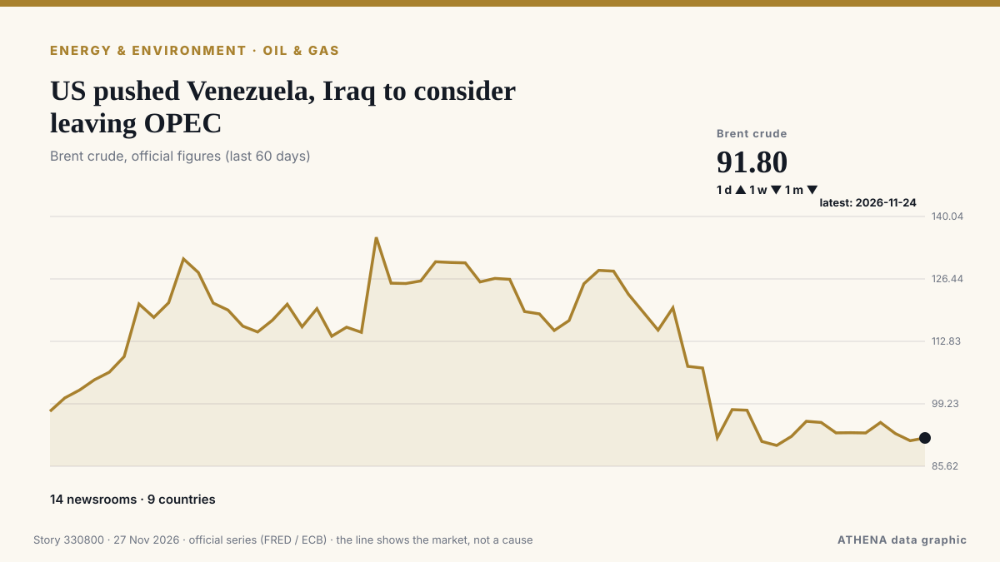

Oil & gas
SponsoredPresented by  Cybernetics and Artificial Intelligence Lab Welcome to the Cybernetics and Artificial Intelligence Laboratory, established at the Department of Business Administration of the National and Kapodistrian University of Athens. The lab is headed by Professor Dimitrios Thomakos. The lab aims to do research that can be published in top venues. Our research uses tools and methods of Artificial Intelligence, and lies in the following areas: - Forecasting - Decision making - Cyber security - Finance We are always looking forward to collaborating with exceptional students!
Cybernetics and Artificial Intelligence Lab Welcome to the Cybernetics and Artificial Intelligence Laboratory, established at the Department of Business Administration of the National and Kapodistrian University of Athens. The lab is headed by Professor Dimitrios Thomakos. The lab aims to do research that can be published in top venues. Our research uses tools and methods of Artificial Intelligence, and lies in the following areas: - Forecasting - Decision making - Cyber security - Finance We are always looking forward to collaborating with exceptional students!
| 15 Nov | 0 |
|---|---|
| 16 Nov | 0 |
| 17 Nov | 0 |
| 18 Nov | 0 |
| 19 Nov | 1 |
| 20 Nov | 1 |
| 21 Nov | 0 |
| 22 Nov | 1 |
| 23 Nov | 0 |
| 24 Nov | 7 |
| 25 Nov | 6 |
| 26 Nov | 6 |
| 27 Nov | 2 |
| 28 Nov | 0 |

US pushed Venezuela, Iraq to consider leaving OPEC
LONDON/ BAGHDAD/ HOUSTON: The Trump administration encouraged Venezuela and Iraq to consider leaving OPEC earlier this year and prevented Venezuela from paying its annual membership dues to the… from Business Recorder
Diesel tanker carrying up to 7,000 tonnes sinks near Ibiza, killing one
An oil tanker carrying up to 7,000 tonnes of diesel has sunk off the coast of Ibiza, leaving one crew member dead, authorities have said. from Daily Mirror
Qatar LNG exports hit highest level since U.S.-Iran war began, Bloomberg reports
Shipments from Ras Laffan have risen 25 percent in a month, boosting supplies to Europe and Asia ahead of peak winter demand. from Doha News
Petronas Names ‘World's First’ Nearshore FLNG Facility
Petronas has officially named its third floating liquefied natural gas (FLNG) facility, PFLNG TIGA, at Samsung Heavy Industries' shipyard in South Korea, ahead of… from Offshore Engineer
Bangchak halts Thai refinery as 7 hurt in fire
The cause of the incident is under investigation. from The Business Times
Labor braces for as few as 10 seats in Victorian bloodbath
Premier Ben Carroll and at least 40 of his colleagues are staring down the barrel of defeat in their electorates as the ALP faces a repudiation of its 12 years in office. from Australian Financial Review
Oil slips over 1% as supply glut prospect offsets Middle East disruption fears
Brent crude futures drop $1.35, or 1.5%, to $90.05 a barrel. from Express Tribune
Trafigura appoints Helio Cumbi as Executive Director, Mozambique
Trafigura has appointed Helio Cumbi as Executive Director, Mozambique, and Business Development Lead for East and Southern Africa Oil. from Club of Mozambique
Iraq PM sacks senior officials over oil smuggling scandal
Iraq's prime minister has sacked senior officials over an oil smuggling investigation and ordered tighter federal control over Kurdistan's oil exports. from The New Arab
Samsung and DNV team up on nuclear-powered LNG carrier
Samsung Heavy Industries, Tesser Atomics, NTNU and DNV to develop nuclear-powered LNG carrier concept for transatlantic trade. from Seatrade Maritime
Afreximbank, Ibom LNG partner to raise $1.5bn for gas project
Nigeria's Ibom LNG & Logistics Base has signed a financial advisory agreement with the African Export-Import Bank (Afreximbank) to support the mobilization of $1.5 billion for its proposed liquefied… from LNG Prime
Equinor, JAPEX agree NCS asset swap, trading Goliat stake for more of Verdande
Equinor will trade an 8% stake in Goliat and interests in two Norwegian Sea exploration licenses to JAPEX in exchange for JAPEX's 3.5% stake in Verdande and $65 million in cash. from World Oil
Army plan to detonate lead azide in Iowa 'insane': Attorney
An attorney representing victims of the Sept. from The Hill
Libya's NOC plans 2027 bid round for undeveloped fields, exploration round in 2028
Libya's NOC will launch a bid round for discovered, undeveloped and marginal fields in 2027 and an exploration round in early 2028. from World Oil
Saipem wins $650 million in Aramco offshore contracts across five Saudi fields
Saipem has won two Aramco offshore contracts worth about $650 million, covering seven production deck manifolds, about 39 km of pipeline and 41 km of power cable across the Marjan, Safaniya, Manifa… from World Oil
US data centre boom through 2028 will lift power and gas demand: Goldman Sachs
The rapid expansion could further tighten US power markets and increase natural gas demand. from The Business Times
China, India set for record Russian oil imports in 2026
China and India are on track for record Russian oil imports this year, plugging a supply gap caused by the Iran war, as US sanctions waivers eased purchases and Ukrainian drone attacks knocked out… from Business Recorder
TotalEnergies strengthens its partnership with Continental Resources to develop its gas production
TotalEnergies has signed a new agreement with Continental Resources, under which TotalEnergies acquires interests in natural gas upstream assets. from Cyprus Shipping News
Putin Calls for More Oil Refining in Siberia, Russia’s Far East
Russian President Vladimir Putin on Tuesday told a meeting of his fuel and energy commission that Russia must develop oil refining in Siberia and the Far East. from Kyiv Post